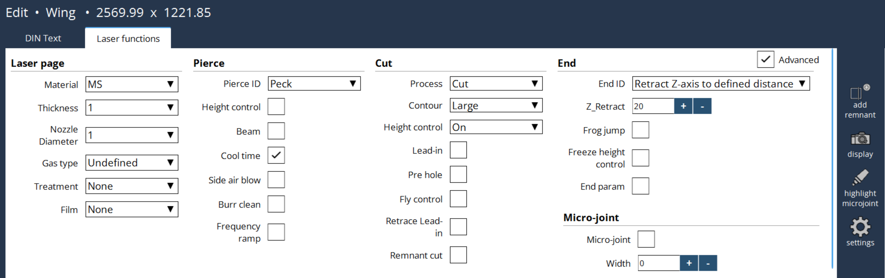

Modifica tecnologia laser
Informazioni generali
Questa opzione consente all’operatore di reagire e risolvere eventuali problemi che possono verificarsi sulla macchina.

Pagina laser
L’utente può selezionare la pagina laser in base alle esigenze nelle funzioni laser. Allo stesso modo, può essere modificata manualmente nel comando testo DIN G253. Le modifiche apportate saranno implementate sia nel testo DIN che nelle funzioni laser.
-
Materiale: specifica il tipo di materiale.
-
Spessore: definisce lo spessore del materiale.
-
Diametro ugello: imposta il diametro dell’ugello utilizzato per il taglio.
-
Tipo di gas: determina il gas di processo utilizzato nel procedimento di taglio.
-
Trattamento: si riferisce a qualsiasi trattamento di pre-lavorazione o post-lavorazione applicato al materiale.
-
Pellicola: specifica se sulla superficie del materiale è presente una pellicola di protezione, cosa che può influire sui parametri di taglio.
Incisione preliminare
L’utente può selezionare il tipo di incisione in base alle proprie preferenze.
-
Controllo altezza: controlla il processo di regolazione della distanza durante l’incisione preliminare. Generalmente, dopo il posizionamento alla distanza di stallo dell’incisione preliminare, il controllo altezza è spento. Questo evita il tremolio della testa di taglio a causa di schizzi di materiali durante l’incisione preliminare, migliorando al contempo la qualità dell’incisione preliminare. È possibile mantenere attivo il controllo altezza durante l’incisione preliminare della lamiera sottile o altre condizioni speciali per migliorare il tempo di processo.
-
Raggio: controlla l’attivazione/disattivazione del raggio quando si passa dai parametri dell’incisione preliminare a quelli di taglio. Generalmente, dopo il completamento dell’incisione preliminare, il raggio viene spento e i parametri del laser vengono aggiornati ai valori di taglio. Quindi il raggio acceso e il taglio ha inizio.
-
Tempo di raffreddamento: controlla il parametro di attivazione/disattivazione del tempo di raffreddamento nell’incisione preliminare. Al termine di ogni fase/stadio di incisione preliminare, nel parametro viene definito un tempo di raffreddamento. Durante questo periodo di tempo, il raggio è spento per raffreddare il materiale e poi riacceso, per evitare il surriscaldamento del materiale durante l’incisione preliminare.
-
Soffiaggio aria laterale: comanda l’elettrovalvola di attivazione/disattivazione del soffiaggio aria laterale per una durata definita nel parametro di incisione preliminare. Vengono utilizzate potenze laser elevate per perforare i materiali spessi. Alla fine dell’incisione preliminare, aria ad alta pressione viene soffiata dai lati per raffreddare il materiale, rimuovere gli schizzi, ecc., in modo tale che il taglio non ne risenta.
-
Pulizia bava: controlla il richiamo del sottoprogramma di pulizia bava alla fine dell’incisione preliminare. Dopo che l’incisione preliminare è stato completata, in alcuni materiali si forma lava fusa sulla sommità del materiale come una montagna. Al fine di eliminare questo materiale fuso materiale viene richiamato un sottoprogramma per spostare la testa con alta pressione sopra la lava per ripulirla. Il tipo di gas e la pressione sono definiti nei parametri macchina.
-
Ramping frequenza: controlla il ramping frequenza nell’incisione preliminare. Se il metodo di incisione preliminare selezionato è l’incisione preliminare con variazione potenza/ciclo/misura dell’interstizio (PM= da 22 a 27), l’attivazione di questa attività aumenterà anche la frequenza. Non valido con altri tipo di metodi di incisione preliminare.
Taglio
L’utente può tagliare in base alle proprie preferenze (modificando il processo, contorno di lavorazione). In base al tipo di contorno, il disegno verrà reso nel colore corrispondente indicato di seguito:
Contorno piccolo = arancione
Contorno medio = rosa
Contorno grande = verde
Marcatura = marrone
* Collegamento: controlla la funzione di attivazione/disattivazione del collegamento nel PLC. Nel programma NC, la lunghezza di collegamento è definita per ogni taglio del contorno e può essere regolata tramite il parametro Lunghezza regolazione collegamento nel database. Se attivato, utilizza i parametri iniziali del contorno specifico. Una volta raggiunta la distanza definita, passa ai parametri contorno.
-
Preforatura: controlla il richiamo del sottoprogramma Preforatura prima dell’inizio del taglio effettivo. Se attivato, utilizza i parametri di preforatura disponibili nel database. Una volta completata la preforatura, i parametri vengono commutati e portati sui valori del contorno.
-
Controllo volo: controlla la mascheratura degli output dal PLC all’NC per il processo di volo.
-
Riesamina collegamento: controlla la funzione di riesame del taglio collegamento. Se l’attività di collegamento è attiva e il taglio collegamento è terminato, la testa viene riesaminata alla stessa lunghezza della traiettoria di collegamento con il raggio spento, ma con il controllo altezza attivo. Ancora una volta, il taglio viene avviato con i parametri contorno, quindi la lunghezza di collegamento viene tagliata da due set di parametri per una migliore larghezza della fessura di taglio e una migliore pulizia delle bave.
-
Taglio residuo: controlla il taglio residuo della lamiera ai bordi. Se il taglio residuo è attivo, il comando M14 non accende il raggio laser. A parte questo, altre funzioni come posizionamento in altezza, attivazione gas, ecc., saranno completate.
Estremità laser
Si basano sulla distanza di disimpegno dell’asse Z insieme a salto, congelamento HC, parametro finale, ecc. alla fine.
-
Disimpegno Z: l’utente può specificare la distanza di disimpegno dell’asse Z in corrispondenza della fine del taglio.
-
Salto: controlla la funzione di attivazione/disattivazione del salto dell’asse Z. Generalmente, al termine del taglio, l’asse Z viene prima spostato nella posizione di disimpegno; quindi gli assi X e Y sono posizionati nel punto d’intervento successivo. Con il salto abilitato, l’asse Z inizia a muoversi nella posizione di disimpegno; allo stesso tempo, anche gli assi X e Y iniziano a muoversi. Se l’asse Z non raggiunge la posizione di sblocco, ma gli assi X e Y completeranno la posizione di destinazione, il movimento di disimpegno dell’asse Z viene interrotto e viene attivata la posizione di stallo. Quindi le posizioni degli assi X, Y e Z sono pronte per l’operazione successiva. In questo modo, il il tempo di processo migliora.
-
Blocca controllo altezza: controlla il blocco del controllo altezza (HC) alla fine del taglio. La distanza prima della quale il blocco deve essere attivo è definita nel parametro del database. Mentre il job di taglio è in corso e se, alla fine, il job rimane indietro, questo può causare uno spostamento indietro della testa. Per evitare questa situazione, il movimento della testa è bloccato alla fine del taglio.
-
Parametro finale: controlla l’abilitazione/disabilitazione dell’utilizzo dei "Parametri finali" alla fine del taglio. La distanza prima della quale i parametri finali devono essere abilitati è definita nel parametro del database. Al termine del taglio, è possibile passare a diversi parametri al volo per una migliore finitura del job per effetto della decelerazione degli assi.
-
Raggio: spegne il raggio prima di una certa distanza alla fine del taglio, per consentire una microgiunzione.
Microgiunzione
Piccola sezione non tagliata per mantenere i pezzi attaccati alla lamiera, impedendo il movimento.
-
Larghezza microgiunzione: l’utente può selezionare i contorni simili selezionando e abilitando una microgiunzione con il campo valori compreso tra 0 a 3. Il valore predefinito è +0,7 mm.
Piccola sezione non tagliata per mantenere i pezzi attaccati alla lamiera, impedendo il movimento.
-
Larghezza microgiunzione: l’utente può selezionare i contorni simili selezionando e abilitando una microgiunzione con il campo valori compreso tra 0 a 3. Il valore predefinito è +0,7 mm.